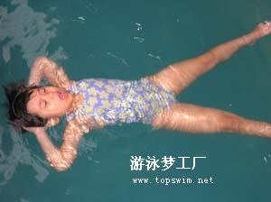
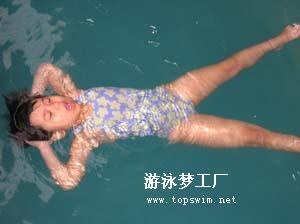
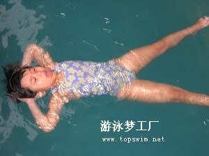
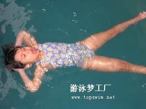
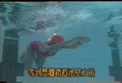
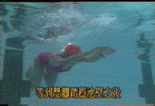
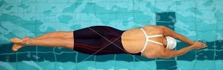
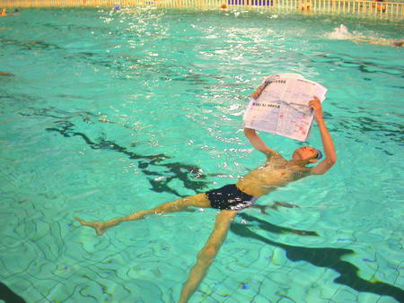

重心与漂浮
由于人体各部位的比重并不相同,胸腔的比重较轻,吸气后就像个大气球,腿部的比重比较重, 人在水中,双手置于体侧,这时人体的重心大约在肚子附近,浮心位置则位于胸腔附近,此时因下半身比例上比较重,所以脚会渐渐下沉,直到站立为止,这就是为什么我们在做这个漂浮时,脚会先往下沉的原因了。


 

 



原帖由 徐夫人@匕首 于 2010-2-19 19:50 发表
如果能用最少的能量保持身体的流线型漂浮姿态，那么四式泳姿的肢体动作学习会变得轻而易举。感谢楼主提供这么好的学习资料！


 漂版能够做到“立漂”、“斜漂”，这是水面漂浮的最高境界了！看到很多泳友游泳学习热情很高，也很刻苦，可是进步却不快，漂浮能力差可能就是他们的“硬伤”，要多向他们介绍你的“独门绝技”啊！
漂版能够做到“立漂”、“斜漂”，这是水面漂浮的最高境界了！看到很多泳友游泳学习热情很高，也很刻苦，可是进步却不快，漂浮能力差可能就是他们的“硬伤”，要多向他们介绍你的“独门绝技”啊！
原帖由 徐夫人@匕首 于 2010-3-10 11:13 发表
仰漂是一件很惬意的事，经过练习你也可以做到。
4215


原帖由 动车组 于 2010-3-10 15:26 发表
他不怕把报纸搞湿了。
水面漂浮不是很困难，难的是长时间漂浮，还要看报纸、拉二胡 。
。原帖由 forceful 于 2010-7-7 23:27 发表
发现都是老者，可能他们心清，静漂时有益。